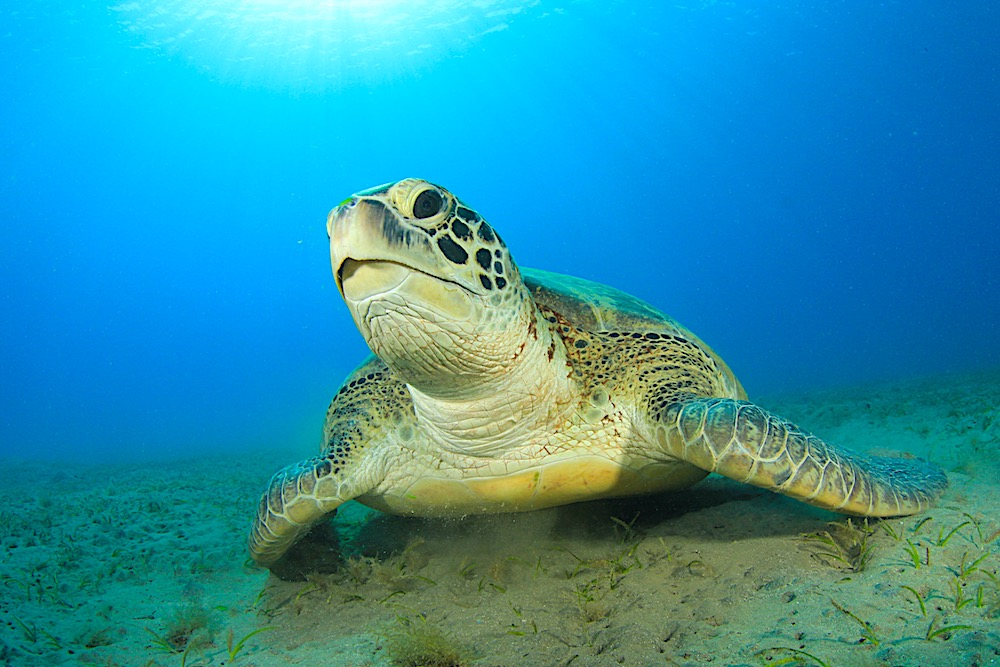
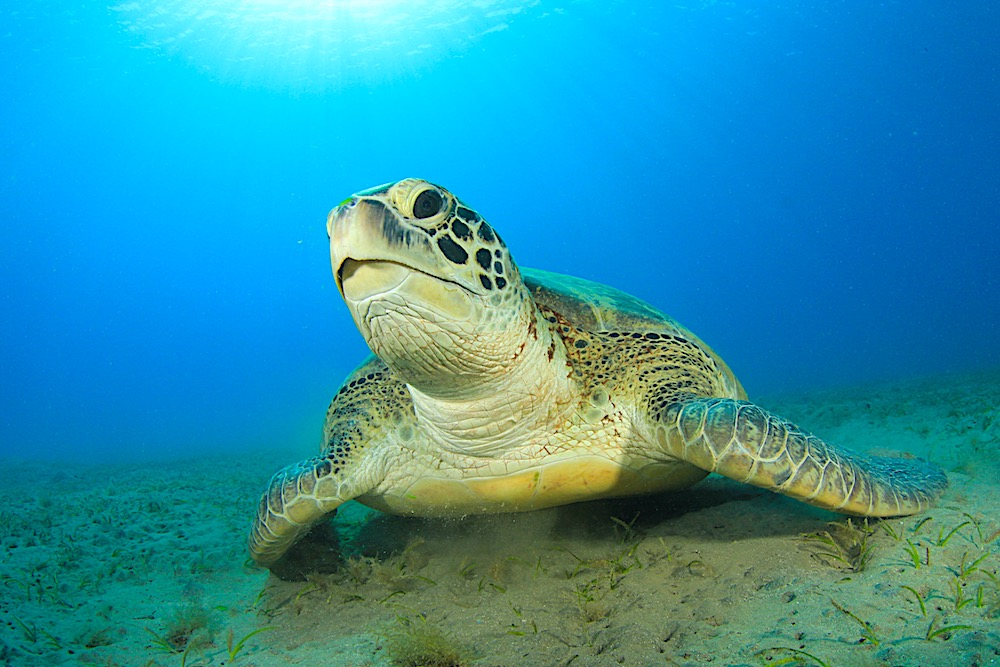
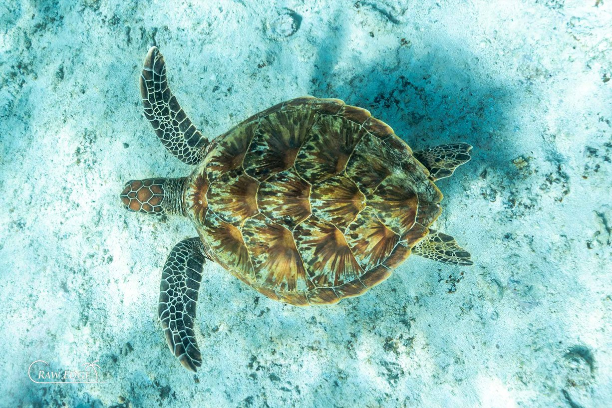
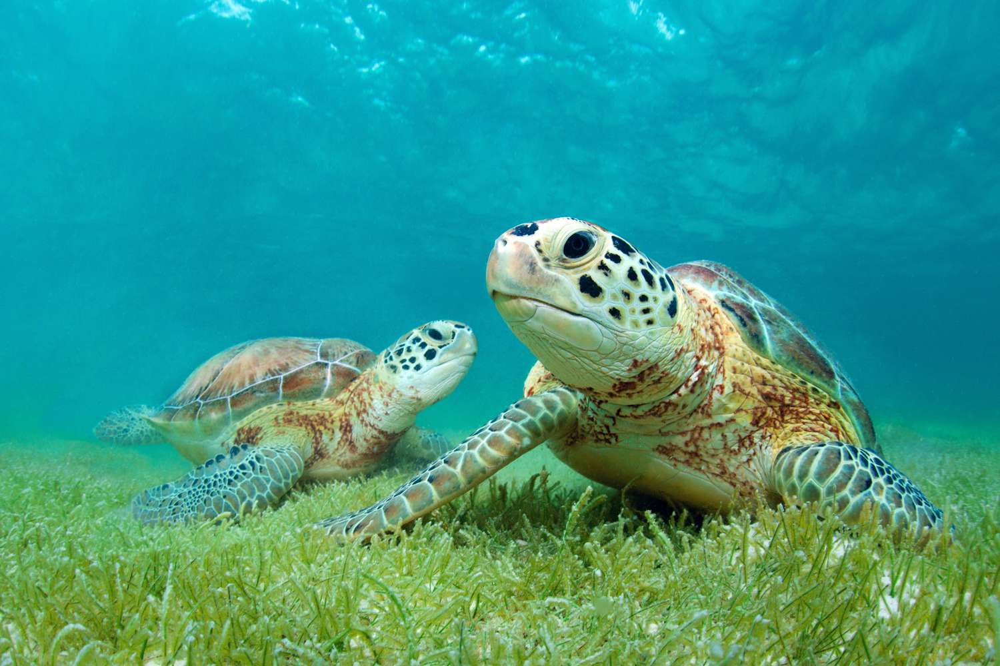
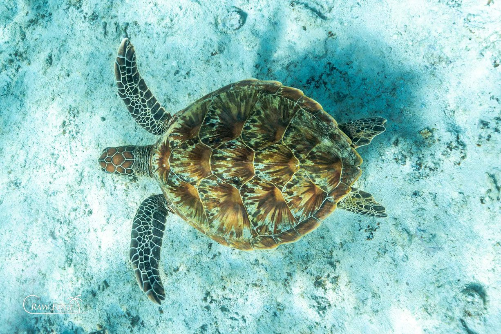
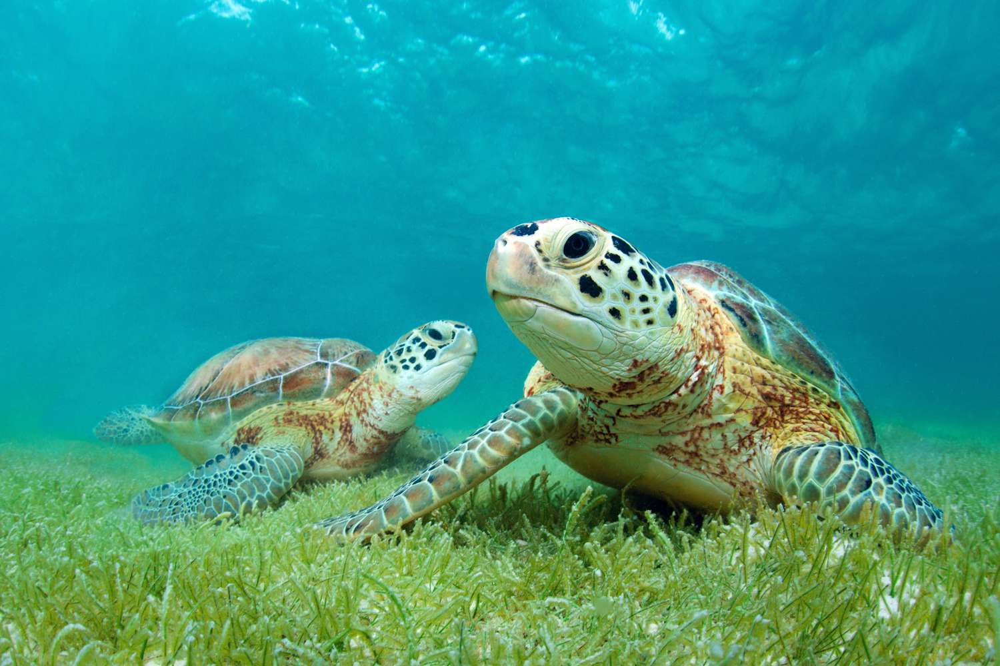

Green Sea Turtle
Green turtles can be found all around the world. They nest in over 80 countries and reside in over 140 countries' coastal areas. The Green Turtle is the most common turtle found in Sri Lanka. Their English name derives from the color of the fat found beneath their shells, which is unfortunately used to make turtle soup. Fortunately, this practice is becoming less common. Young Green Turtles eat mostly meat. Adults, on the other hand, are herbivores, eating primarily on marine flora with their finely serrated jaws.
| Kingdom | Animalia |
|---|---|
| Phylum | Chordata |
| Class | Reptilia |
| Order | Testudines |
| Family | Cheloniidae |
| Genus | Chelonia |
| Species | mydas |
Appearence
Green turtles are the largest of the hard-shelled sea turtles, yet their heads are rather small. The average adult is 3 to 4 feet tall and weighs 300 to 350 pounds. Their shells are dark brown, grey, or olive in color, with a much lighter, yellow-to-white underside. Their shells have five scutes down the center and four on each side. Other distinguishing features of the green turtle include a serrated beak on the lower jaws and two large scales between the eyes.
Behaviour and Diet
Green turtles are the only herbivorous sea turtle species. Their diet consists primarily of algae and seagrasses, but they may also consume sponges, crustaceans, and abandoned fish. Green turtles, like all sea turtles, are reptiles that must surface to breathe and lay eggs. Green turtles travel hundreds of kilometers between their foraging sites and nesting beaches. They are nocturnal, solitary nesters.
Green turtles go through a number of developmental stages from hatchling to adult. Hatchlings swim to offshore locations after hatching from the nest, where they dwell for several years in pelagic habitat. Juveniles eventually leave the open ocean habitat to forage in shallow coastal areas, where they mature to adults and spend the rest of their lives. Adults migrate from their coastal feeding regions to the waters off the nesting beaches where they hatched every 2 to 5 years to reproduce.

Green turtles are the only herbivorous sea turtle species. Their diet consists primarily of algae and seagrasses, but they may also consume sponges, crustaceans, and abandoned fish. Green turtles, like all sea turtles, are reptiles that must surface to breathe and lay eggs. Green turtles travel hundreds of kilometers between their foraging sites and nesting beaches. They are nocturnal, solitary nesters.
Green turtles go through a number of developmental stages from hatchling to adult. Hatchlings swim to offshore locations after hatching from the nest, where they dwell for several years in pelagic habitat. Juveniles eventually leave the open ocean habitat to forage in shallow coastal areas, where they mature to adults and spend the rest of their lives. Adults migrate from their coastal feeding regions to the waters off the nesting beaches where they hatched every 2 to 5 years to reproduce.
Lifespan and Reproduction
Green turtles have a long life expectancy of at least 70 years. Female green turtles reach adulthood between the ages of 25 and 35. Every 2 to 5 years, they embark on reproductive migrations and return to nest on a beach near where they hatched decades before. Green turtles lay roughly 110 eggs per nest and will nest every two weeks for several months before returning to their feeding sites. The eggs hatch after about two months of incubation in the warm sand, and the hatchlings make their way to the water. Hatchlings orient themselves seaward by crawling away from the darkest shadow of the landward dune or vegetation and towards the brightest horizon. This is toward the broad horizon over the ocean on undeveloped beaches.
 

 


